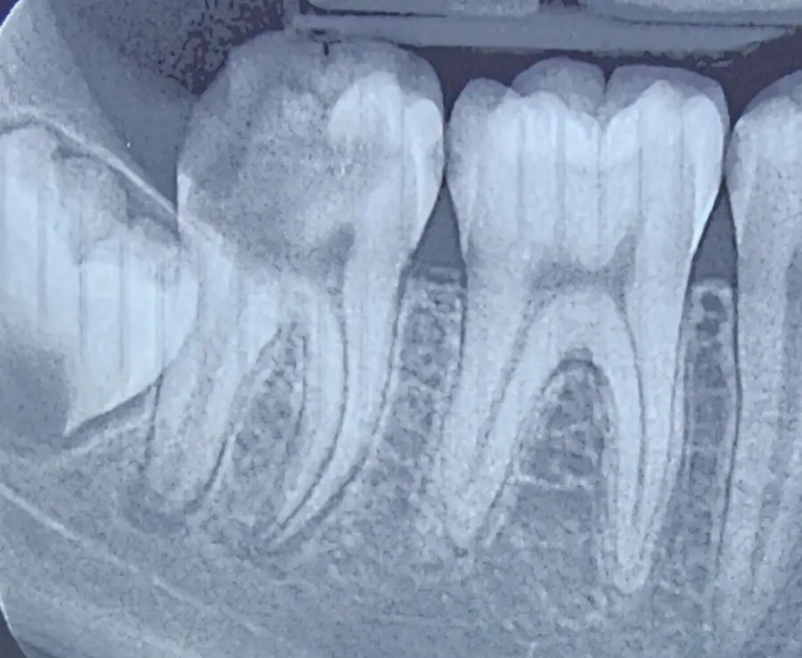

نسخه استخراجشده؛ ترجمه یا تأیید علمی انجام نشده است. وضعیت: captured
دختری ۱۵ ساله برای مشاوره ارجاع شده است. سؤال مشخص است: پروگنوز دندان ۷ چیست، نگهش داریم یا بکشیم؟

اگر فقط همینها را کنار هم بگذاری، دندان پروگنوز ضعیف دارد و در یک بیمار بزرگسال احتمالاً کاندید کشیدن است. اما یک متغیر دیگر در این پرونده هست که وزنش از همهی اینها بیشتر است. کدام؟
سن بیمار. در ۱۵ سالگی رشد تمام نشده و ایمپلنت روی میز نیست. اگر امروز دندان کشیده شود، چند سال تا زمان مجاز ایمپلنت فاصله میماند و ریج در همین فاصله آتروفی میشود. پس هزینهی کشیدن فقط از دست دادن دندان نیست؛ از دست دادن استخوانی است که قرار بوده بستر درمان بعدی باشد. تا وقتی ریشه در استخوان است، ارتفاع و عرض ریج حفظ میشود.
حفظ کردن اینجا لزوماً یعنی بازگرداندن فانکشن کامل نیست. هدف این مرحله نگه داشتن ریشهها در استخوان است، حتی اگر شرایط ایدهآل رستوریتیو فراهم نباشد. اگر تنها کار ممکن درمان ریشه و سیل سطح باشد و فقط ریشهها باقی بمانند، همان هم کارش را میکند؛ بیمار باید با استخوانی که هنوز سر جایش است به سن درمان نهایی برسد.
این تصمیم یک شرط دارد: ریشهی باقیمانده تا وقتی عاری از عفونت باشد استخوان را حفظ میکند؛ ریشهی عفونی دقیقاً همان استخوانی را از بین میبرد که به خاطرش نگهش داشتهای. با بهداشت ضعیف این بیمار، پیگیری منظم بخشی از خود درمان است، نه یک توصیهی اضافه.
پروگنوز خصوصیت ثابت دندان نیست؛ بستگی دارد به اینکه دندان قرار است چه نقشی و برای چه بازهی زمانی ایفا کند. سؤال این نیست که دندان چقدر قابل ترمیم است؛ این است که تا رسیدن بیمار به سن درمان نهایی چه چیزی باید حفظ شود.